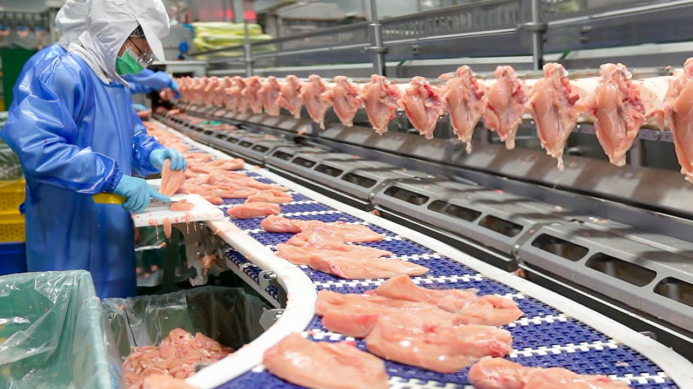
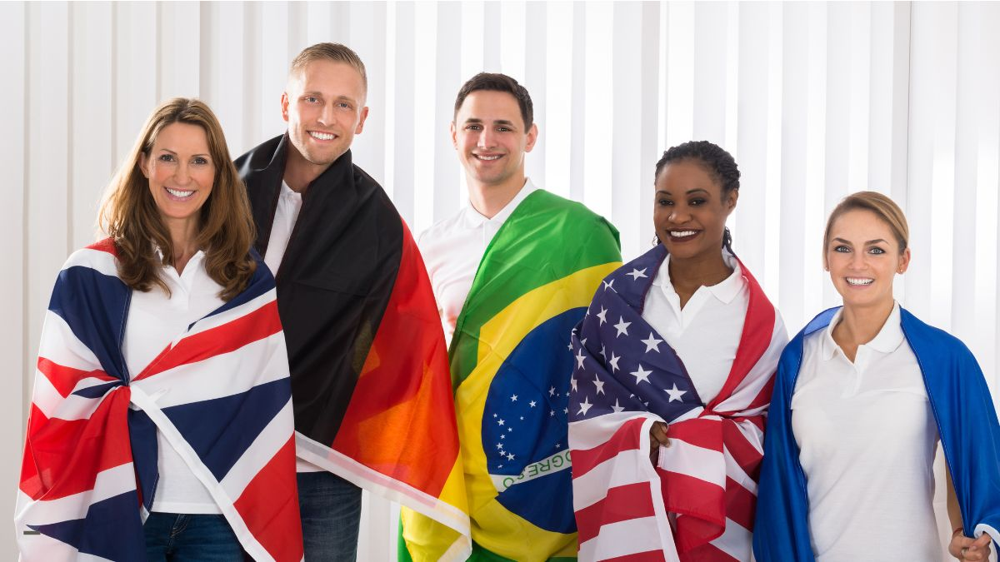
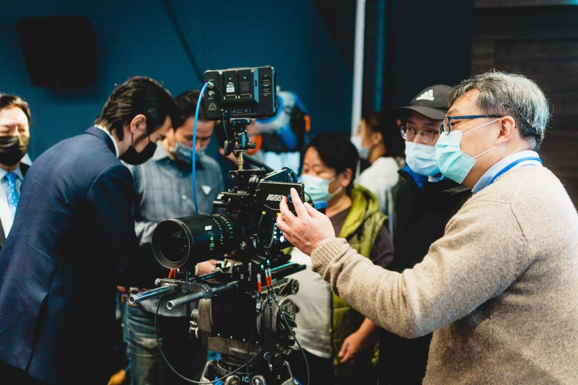
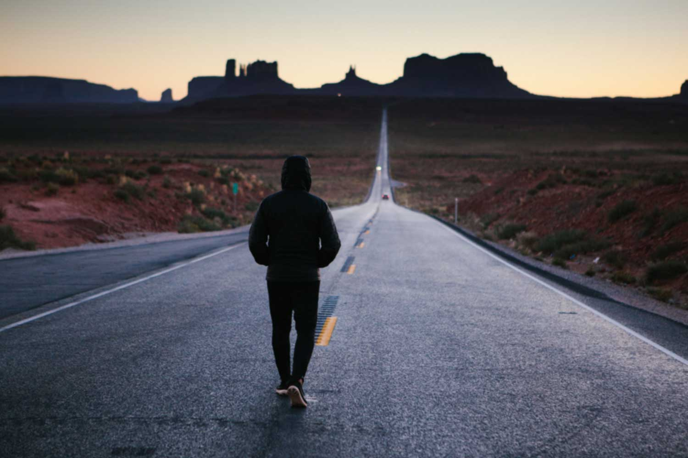

我的夢想：繼承家業，做好食品加工 : 從小在家裡工廠長大，看著爸媽為了食品加工事業努力賺錢，我對這個行業產生了深厚的感情。每當工廠裡飄出熟悉的雞肉的血腥味，我就會想，未來是不是也能接下這份有趣的工作，繼續傳接家族的精神與技術。我的夢想，是把家業發揚光大，加入更多我在學校所學的技能，讓科技與食品磨擦出不一樣的火花出來。
夢想是一種讓你看得見未來的力量。」 ── 歌德
為了實現我繼承家業、拓展食品加工事業的夢想，我設定了自己的短期目標──學習英文。現在的世界早已沒有距離，懂得英文，就能與更多外國客戶溝通、交流想法、甚至談生意。我希望有一天，能自信地用英文介紹我們家的產品，讓更多人看見我們的用心。學英文不只是為了考試，而是我通往未來的一把鑰匙，也是我邁向夢想的第一步。而且外國妹很正，可以順便女友~~
我對拍攝充滿興趣，不論是記錄生活、捕捉畫面，或是剪輯影片，我都樂在其中。近幾年，我也開始思考如何把這個興趣和我的未來結合在一起。因為我家是做食品加工的，我希望有一天能親自為我們的產品拍攝宣傳影片，讓更多人透過鏡頭認識我們的用心與品質。我相信，好的影像能說故事，也能拉近與顧客的距離。為此，我會持續學習拍攝與剪輯技巧，希望將來能拍出屬於我們品牌風格的大片!!!把家業注入更多創意。
現在對我來說最大的困擾，就是我常常覺得懶，甚麼都不想做。明明知道有很多事該做、有很多知識想學，卻總是提不起勁，延到最後才匆忙應付。我也會因此對自己感到不滿意，甚至覺得自己很廢。但我知道，這樣的狀態如果不改變，夢想就無法實現。我正在嘗試找出讓自己更有動力的方法，例如設定小目標、找一個我真正感興趣的學習主題，或者把學習跟未來的夢想連結起來。我相信，只要願意開始改變，再慢也沒關係，總有一天我能找到讓自己真正行動起來的力量。
